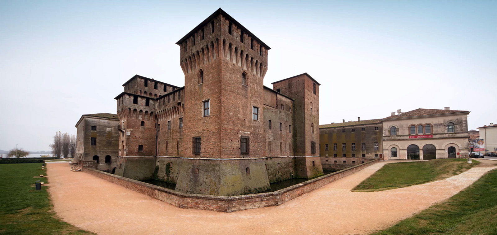
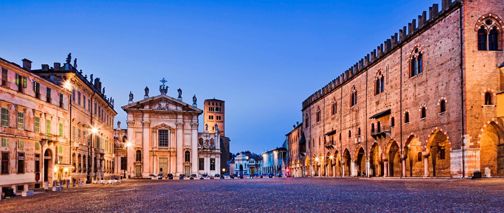
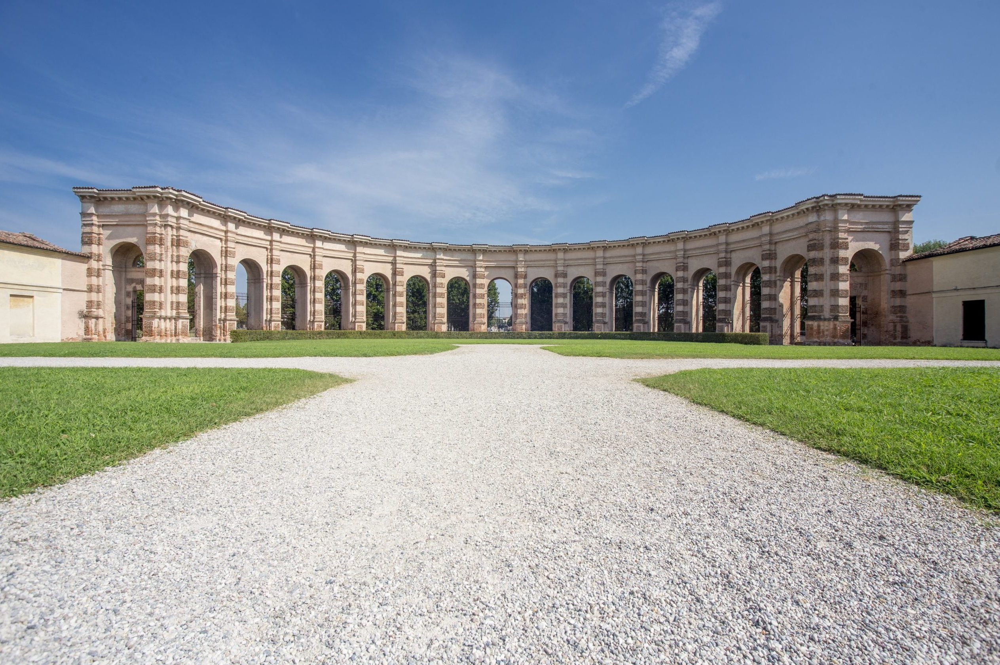

Mantova
Viaggio in treno
Partenza treno
Bolzano: 7:30
Mantova: 10:20
Durata: ca. 3 ore
Costo biglietto
Andata: 17,70 €
Ritorno: 17,70 €
Biglietto Palazzo Ducale
Visita intero palazzo: 15 €
Visita senza Camera degli Sposi e Museo Archeologico: 9€
Biglietto Palazzo Te
Le scuole possono prenotare al numero verde 800 714049 per gruppi di massimo 25 visitatori.
Per gli studenti e i ragazzi dai 12 ai 18 anni il biglietto è ridotto a 7€
Pizzeria Pronta Pizza
Prenotazione
Dai 15 ai 20 €
Gelateria Puro&Bio
Dai 5 ai 10 €
Costo totale
Circa 80 €
Storia
Mantova e le Signorie
La storia di Mantova nel periodo delle signorie è strettamente legata alla famiglia dei Gonzaga, che governò la città per quasi quattro secoli. Prima dell'avvento dei Gonzaga, Mantova era sotto il controllo dei Bonacolsi, una potente famiglia ghibellina. Il loro dominio terminò nel 1328, quando Ludovico I Gonzaga, con l'aiuto del popolo e l'appoggio di altre famiglie nobiliari, rovesciò Rinaldo Bonacolsi, detto il Passerino, e si proclamò Signore di Mantova.
Sotto i Gonzaga, Mantova conobbe un periodo di grande splendore e crescita economica. La città divenne un centro culturale di primo piano, attrattiva per artisti, letterati e architetti rinomati. I Gonzaga si impegnarono nella costruzione di maestosi edifici, come il Palazzo Ducale e il Palazzo Te, simboli della loro potenza e del loro mecenatismo. Quest'ultimo, progettato da Giulio Romano, rappresenta uno dei massimi esempi di architettura rinascimentale.
Il periodo delle signorie fu anche caratterizzato da alleanze matrimoniali strategiche e da un'accorta politica estera, che permise ai Gonzaga di consolidare il proprio potere e di ampliare i propri domini. Tra i più celebri esponenti della famiglia, spiccano Ludovico III Gonzaga, che governò con saggezza e abilità diplomatica, e Federico II Gonzaga, che ottenne il titolo di Duca di Mantova nel 1530 dall'imperatore Carlo V.
Il dominio gonzaghesco terminò nel 1708, quando l'ultimo duca, Ferdinando Carlo di Gonzaga-Nevers, fu costretto all'esilio e Mantova passò sotto il controllo diretto dell'Impero asburgico. Tuttavia, il periodo delle signorie rimase impresso nella storia di Mantova come un'epoca di prosperità e grandezza, che lasciò un'impronta indelebile nel patrimonio artistico e culturale della città.
Palazzo Ducale
Piazza Sordello
Palazzo Te
Itinerario
Stazione Bolzano
Ore: 7:00
Si aspettano gli alunni, si fa l'appello e alle 7:30 ca. si prende il treno.
Stazione di Mantova
Ore: 10:20
Una volta arrivati si fa 5 min di pausa e poi si parte per la prossima tappa; 20 min di camminata ca.
Palazzo Ducale
Ore: 10:45
La visita dura circa 2 ore
Piazza Sordello
Ore: 12:45
Si visita la piazza per 10 min e poi si va a pranzare, 30 min ca. di camminata
Pizzeria Pronta Pizza
Ore: 13:25
2 giorni prima prenotiamo la pizzeria e gli diamo già le nostre ordinazioni, si sta nella piazza ca. 1 ora e poi 10 min ca. di camminata
Palazzo Te
Ore: 14:35
Visitiamo il palazzo per 50 min ca., poi 15 ca. min di camminata
Gelateria Puro&Bio
Ore: 15:40
Ordiniamo i gelati e li mangiamo mentre stiamo andando verso la stazione, 30 min ca. di camminata
Stazione di Mantova
Ore: 16:20
Usiamo i bagni se necessario e prendiamo il treno alle 16:29
Stazione di Bolzano
Ore: 19:30
Concludiamo per le 19:35